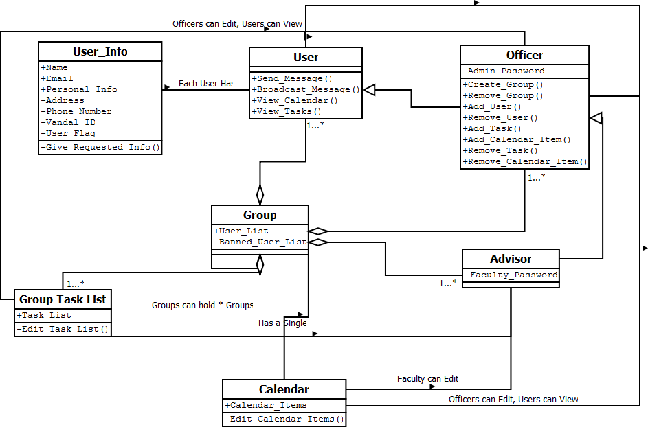

Groups: Can have multiple subgroups
Lee's Class Diagram
Groups: Can have multiple subgroups
User List: Contains information about users who are a member of a group. This could either be one user list or multiple for any sub-groups.
User: Any member of the group. They can lookup who is in the group and send emails to the group.
Group Owner: Owner of the group. Can perform administrative tasks such as adding or removing a user from a group's user list
Officer: Special type of group owner that can view any private data from the user list along with anything that a group owner and User to do.
Advisor: Faculty member to the organization who has the same abilities as a user.
Requirements that I found from the ACM: The ACM's major requirement is in regards to book keeping. Being able to have a mechanism to keep track of members information such as a user list. More specifically there will need to be able to add different entries to this rather than being constrained to a certain set of values. Likely entries include, but should not be limited to: Name, Email address, Membership status, and UserID.
I pulled information from my own experience as an ACM officer (VP) as well as from fellow and past officers .
Scott Beddall's Class Diagram:

User_Info: Contains general information about a given user, including bio information
User: Basic user class. Sends and receives messages.
Advisor: A faculty member with the same privileges as an Officer.
Officer: Extended user class. Can edit anything within a group; including user privileges, Calendar entries, and Task List entries.
Group: Aggregation of users and groups. Maintains zero or more Task Lists and one Calander.
Task List: Object with its own self contained functions that will be called upon to fulfill functions based on input from Users, Advisors, and Officers.
Calendar: A unified calendar specific to events pertaining to the group.
This class diagram was derived from an interview with VAST Launch Director Sean Wagoner. Most of the features were "make or break." By this, I mean that he wanted either all of these or none at all. Any piece of software without these features will be useless to him and his club. Specifically, Sean requested that we at least include private/public messaging, user Bios, Group Task Lists, and a Group Calander.
The users each have their own information class. These "info" classes are made up of public and private components that can all be viewed by an officer (but are only partially visible to regular users). An Officer is merely a user with access to private functions, so it will inherit functions like send_message() and broadcast() from it parent class. All user's can view the Task List and Calendar, while only officers and advisors are able to change them. Groups can hold users or be made up of aggregate groups.